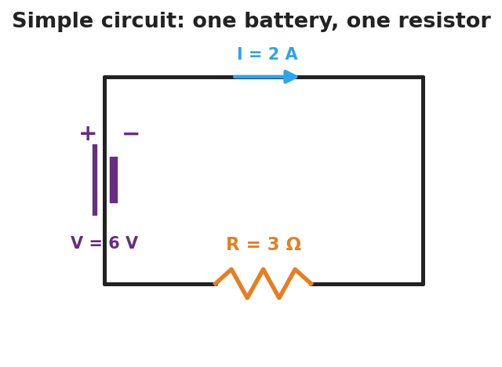

Unit: Current Electricity — Lesson 01: Electric Current and Ohm's Law
Phenomenon
Your teacher holds an "energy stick." Nothing happens — until two people grab the metal ends and complete the loop with their hands. Then it lights up and buzzes. Break the loop, and it goes dark again. Add more people to the hand-chain and it gets harder to light.

Driving Question
What has to be true for electric charge to flow, and what controls how much flows?
Notice & Wonder
Watch the energy-stick loop open and close. List two things you notice and two things you wonder.
Initial Model
Draw the energy-stick loop with two people holding hands. Mark where the push comes from and draw arrows showing which way the charge moves around the loop. Then predict: what would make the light brighter?
Investigate
This is a single battery + resistor loop. Drag the sliders to change the voltage V (the push) and the resistance R (the opposition). Watch the current I = V ÷ R update, and watch the point trace out the V–I line for the resistor you set.
Current I = V ÷ R = 4.0 A · The slope of the purple line is the resistance.
Make It Make Sense
- A resistor has 12 V across it and 3 A flowing through it. Use V = I·R to find its resistance.
- A 4 Ω resistor is connected to a 24 V battery. How much current flows?
- The slope of your V-vs-I line was 3. What physical quantity does that slope represent, and what are its units?
Stuck? Sentence frame
"The current is ___ A because the voltage is ___ V and the resistance is ___ Ω, so I = V ÷ R."
Key Vocabulary (max 3)
- current — the rate of flow of electric charge through a conductor (charge ÷ time), measured in amperes (A)
- voltage — the potential difference, or electrical "push," between two points that drives current around a circuit, measured in volts (V)
- resistance — the opposition a material offers to the flow of charge; the slope of a V-vs-I graph, measured in ohms (Ω)
Revise Your Model
Return to your Initial Model and add the energy-stick hand-chain. Explain, using resistance and current, why adding more people makes the stick harder to light.
Return to the Phenomenon
On the energy stick, why does adding more people in the hand-chain make it harder to light? Answer in one sentence using resistance and current: each person adds resistance, so for the same small voltage the current drops below what the stick needs to light.
Exit Ticket + Closing Reflection
- A resistor has 6 V across it and carries 2 A of current.
(a) What is its resistance? Show V = I·R. (b) The voltage is raised to 12 V with the same resistor — what is the new current? (c) In one sentence, what does the slope of a V-vs-I graph represent? - Reflection: What is one thing about electricity you understand now that you didn't this morning? Who helped you make sense of something?